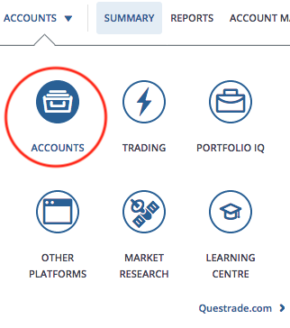
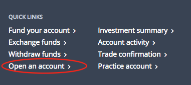

CheckMark Tutoring: How-To Guides for Canadians
CheckMark Tutoring: How-To Guides for Canadians Q: What are the fees associated with opening and maintaining a Questrade account?
There are no fees for opening a Questrade account. There are also no fees for maintaining a Questrade account as long as you have a combined total equity of $5000 across all accounts OR you make one commisionable trade (this includes commission-free trades such as is the case when you purchase ETFs at Questrade) per quarter (of the year). This means you could have $5000 in one account (e.g. RRSP) at Questrade and have another account (e.g. TFSA) with no money in it without having to pay a fee for either account. In this example, it would be a good idea to have more than $5000 in total equity (I recommend at least $10,000) in case your investments decrease in value.
Q: How do I set up an account with Questrade if I don't have one?
To open an account with Questrade (if you do not currently have ANY account with Questrade), you can go to this webpage. Once you are on this webpage, you can click on the type of account that you want. For this example, we will open a RRSP (Registered Retirement Savings Plan) account.
Use the 'Add offer code' on the account selection webpage (first webpage) if you know of any deals for opening a Questrade account. It's a good idea to google 'Questrade offer code' to see if there any promotions going on currently. A good website to check that keeps track of offer codes is retailmenot.ca.
You will then go through a 3-step process ('Create User ID', 'Build a Profile' and 'Set Up Account') to complete the process of setting up your new Questrade account.
The 'Create User ID' step will focus on setting up a Questrade username and password.
The 'Build a Profile' step will require you to provide personal information (e.g. employment, finances, SIN, etc.).
In order to finalize your account, you will need to complete the 'Set Up Account' step. This will require you to accept several agreements and sign off on them. Luckily, this can be done online and is by far the easiest option (otherwise, you will have to mail the signed documents in to Questrade). You will also have to scan and upload one piece of government-issued ID (e.g. Driver's Licence) for Questrade to confirm your identity. This will take 1-2 business days to process. Finally, you will need to fund your account. For an RRSP, the minimum amount that you can fund your account with to open the account is $1000.
Q: How do I set up an account with Questrade if I already have an account?
So let's assume you followed the steps above and you set up an RRSP with Questrade. You already have an account opened with Questrade but now you would like to open another account (e.g. TFSA). How do you do that? Simple! Follow the steps below...
Log in to your Questrade account and then in your 'Accounts' page ('Accounts' button is shown circled in red in the picture to the right), click on the 'Quick Links' to 'Open an account' (pictured below).
